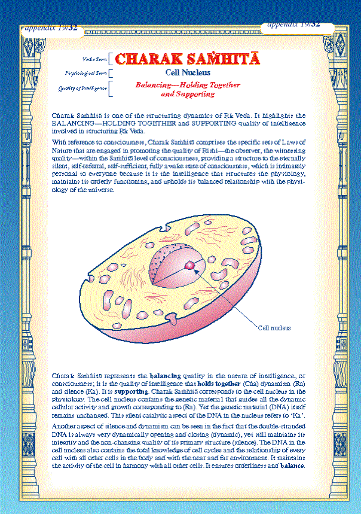

Charaka in the Physiology
In the physiology, Charak Samhita is represented by the cell nucleus. The cell nucleus contains the genetic material that guides all cellular activity and growth. The DNA in the cell nucleus contains all the knowledge about all cycles, cell shape, specification, and response to various conditions. It maintains the activity of the cell in harmony with all other cells. It ensures orderliness and balance. This is the 'balancing, holding together, nourishing, and supporting' quality of the cell nucleus for all tissues of the body.

— Prof. Tony Nader-Ram
in Human Physiology:
Expression of Veda and the
Vedic Literature,
pp. 80-81